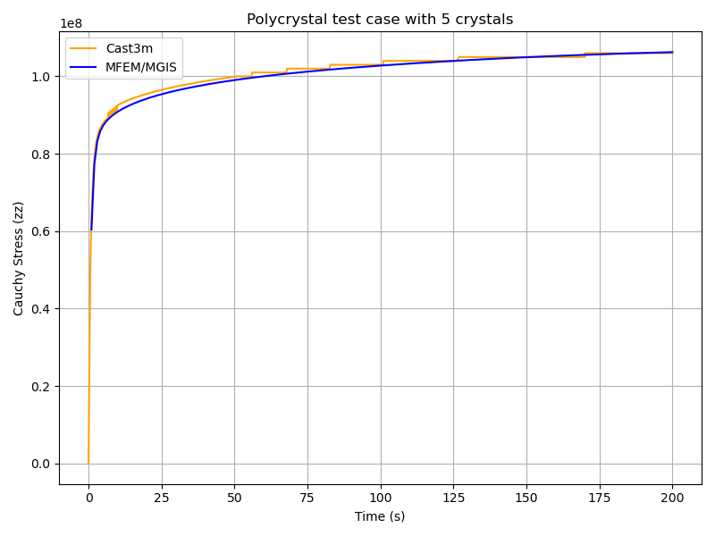
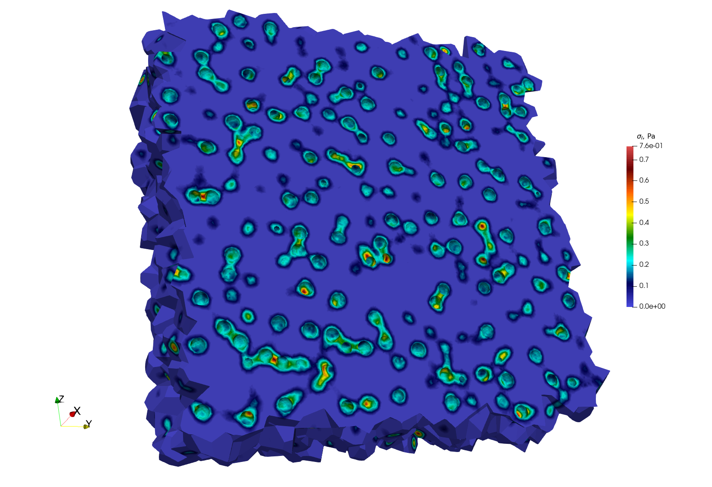
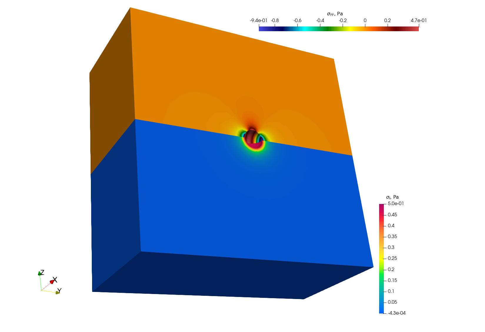
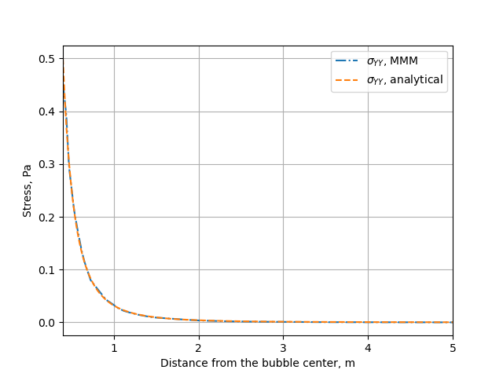

Commented Examples
All the examples presented in this section can be found in the git repositories: https://github.com/latug0/mfem-mgis-examples and https://github.com/rprat-pro/mm-opera-hpc (developed as part of operaHPC project).
Polycrystal
Repository: https://github.com/rprat-pro/mm-opera-hpc/tree/main/polycrystal

Problem definition
This test case illustrates the simulation of a Representative Volume Element (RVE) of a polycrystal made of uranium dioxide (UO₂). The objective is to study the mechanical response of the material under uniaxial loading. This example also implements a fixed-point algorithm that enables the simulation of a uniaxial compression/tensile test with periodic boundary conditions.
Boundary conditions
Periodic boundary conditions are applied on the RVE faces.
The loading is imposed in one direction (axial component \(F_{zz}\) of the macroscopic deformation gradient). The off-diagonal components of the macroscopic deformation gradient are set to zero.
The macroscopic unknowns \(F_{xx}\) and \(F_{zz}\) are determined via a fixed-point algorithm imposing \(S_{xx}=S_{yy}=0\) (macroscopic components of the Cauchy stress tensor).
The main verification result is the stress-strain curve: \(S_{zz}\) (Cauchy) versus \(F_{xx}\).
Numerical and physical parameters
Finite element order: 1 (linear interpolation)
Finite element space: \(H^1\)
Simulation duration: 200 s
Number of time steps: 600
Constitutive law (crystal)
The UO₂ crystal plasticity law used in this example is described in reference [2], and the corresponding MFront file is available on the MMM GitHub repository. In the case of uranium dioxide, the crystal symmetry is cubic, and the corresponding orthotropic elastic properties used in the crystal plasticity law are:
Young’s modulus = 222.e9 Pa
Poisson’s ratio = 0.27
Shear modulus = 54.e9 Pa
The orthotropic basis of each grain is provided as input material data, precomputed from the grain Euler angles. The fixed-point algorithm uses the homogenized elastic properties of the polycrystal to predict the displacement gradient required to converge toward a uniaxial tensile test. These macroscopic properties are derived from the single-crystal elastic constants given above, taking the mean values of the Voigt and Reuss bounds for an isotropic polycrystal (see MacroscropicElasticMaterialProperties.cxx in the repository).
Mesh generation
This section explains how to generate a sample mesh using the Merope toolkit [1].
Before running the script, ensure that the environment variable MEROPE_DIR is properly loaded:
source ${MEROPE_DIR}/Env_Merope.sh
Then, generate the mesh in two steps:
source ${MEROPE_DIR}/Env_Merope.sh
python3 mesh/5crystals.py # generates 5crystals.geo
gmsh -3 5crystals.geo # generates 5crystals.msh
You will obtain a 3D mesh (5crystals.msh) of a polycrystalline sample composed of 5 grains.
Mesh generation options
The following parameters are set in the mesh/5crystals.py script:
L = [1, 1, 1] # Dimensions of the RVE box
nbSpheres = 5 # Number of grains (polycrystal composed of 5 crystals)
distMin = 0.4 # Minimum distance between sphere centers
randomSeed = 0 # Random seed for reproducibility
MeshOrder = 1 # Polynomial order of elements
MeshSize = 0.05 # Target mesh size
The resulting polycrystal is composed of 5 grains.
Mesh Polycrystal composed of 5 crystals

Simulation options
The main executable for this test case is uniaxial-polycrystal. Its command-line options are:
./uniaxial-polycrystal --help
Main options
Option |
Type |
Default |
Description |
|---|---|---|---|
|
— |
— |
Print the help message and exit. |
|
string |
|
Mesh file to use. |
|
string |
|
Vector file to use. |
|
string |
|
Material library. |
|
string |
|
Mechanical behaviour. |
|
int |
|
Finite element order (polynomial degree). |
|
int |
|
Mesh refinement level. |
|
int |
|
Output verbosity level. |
|
double |
|
Simulation duration. |
|
int |
|
Number of time steps. |
|
string |
|
Linear solver to use. |
|
string |
|
Preconditioner for the linear solver. Use |
|
string |
|
Output file containing the evolution of the deformation gradient and the Cauchy stress. |
|
bool |
|
Execute post-processing steps. |
|
bool |
|
Export von Mises stress. |
|
bool |
|
Export the first eigen stress. |
Note
To generate the grain orientation vectors, use the randomVectorGeneration tool provided in the distribution. This ensures a consistent and physically realistic initialization of crystallographic orientations.

Results & Post-processing
You can run the simulation in parallel using MPI:
mpirun -n 16 ./uniaxial-polycrystal
Check Results
By default, the simulation generates the file uniaxial-polycrystal.res.
Plot and Compare:
To visualize and compare the results:
python3 plot_polycrystal_results.py
This script generates the figure plot_polycrystal.png (Figure 6), showing a comparison between Cast3M and MFEM-MGIS results. The Cast3M curve shows minor oscillations due to time-step discretization. The MFEM-MGIS implicit formulation (full Newton algorithm using tangent stiffness) exhibits robust quadratic convergence and excellent parallel performance.
Check the Values
To verify simulation results:
python3 check_polycrystal_restults.py
Expected output: Check PASS.
Example detailed output:
Time MFEM/MGIS CAST3M RelDiff_% Status
0 1.0 6.041066e+07 63100000.0 4.451762 OK
1 2.0 7.737121e+07 79000000.0 2.105167 OK
2 3.0 8.327457e+07 84300000.0 1.231384 OK
3 4.0 8.583679e+07 86600000.0 0.889139 OK
4 5.0 8.730071e+07 87900000.0 0.686468 OK
.. ... ... ... ... ...
595 199.0 1.062465e+08 106000000.0 -0.231979 OK
596 199.0 1.062465e+08 106000000.0 -0.231979 OK
597 200.0 1.062661e+08 106000000.0 -0.250424 OK
598 200.0 1.062661e+08 106000000.0 -0.250424 OK
599 200.0 1.062661e+08 106000000.0 -0.250424 OK
This table shows the comparison between simulated Cauchy stress values and the reference Cast3M results, with relative differences and status indicators.
Simulation of pressurized bubbles
Repository: https://github.com/rprat-pro/mm-opera-hpc/tree/main/bubble
Problem description
The default example is constituted by a single spherical porosity in a quasi-infinite medium. The finite element solution can be compared with an analytical solution giving the elastic stress field as a function of the internal pressure, the bubble radius, and the distance from the bubble. As mentioned above, the boundary conditions for the problem are periodical, and we consider a null macroscopic displacement gradient, which in turns generate a uniform compressive hydrostatic pressure on the REV. In this case with one porosity in a quasi-infinite medium, the compressive hydrostatic pressure is negligeable, in agreement with the analytical solution mentioned above.
Modify the geometry for the single bubble case and mesh it
The geometry for the test case is contained in the file .geo stored in the mesh
folder, and considers a sphere of radius equal to 400 nm at the centre of a (periodic)
cube of 10 µm of size. For a more handy management of the geometry and of the mesh, the
units in the geometry file are expressed in \(\mathrm{\mu m}\). One can modify it and
use it as an input for gmsh to generate the computational mesh for the case by:
gmsh -3 single_sphere.geo
A file .msh is already provided in the folder mesh, generated based on the
aforementioned geometry file. We have seen some slight differences in the final mesh based
on the version of gmsh employed.
Note
If the bubble center, radius, or the surface label are modified, the corresponding data
stored in single_bubble.txt must also be changed.
Note
single_bubble_ci.txt is used for GitHub continuous integration.
Set-up the physical problem
The simulation considers an empty (i.e., not meshed) cavity, on whose surface we impose an arbitrary uniform pressure (unitary by default). The medium is described by a purely elastic constitutive relationship, characterized by two elastic constants:
\(E = 150\ \mathrm{N}\ \mu\mathrm{m}^{-3}\)
\(\nu = 0.3\)
The elastic modulus is rescaled to coherently describe the geometry in micrometers, rather
than in S.I. units. This choice is done to facilitate the creation of more complex
geometries when using Mérope, given the characteristic length scale of the considered
inclusions.
The geometry is meshed using quadratic elements, to better describe the spherical
inclusions contained in the representative elementary volume (REV). Despite MFEM
allowing sub-, super-, and isoparametric analyses, we recommend to stick at least to the
isoparametric choice (i.e., not subparametric) for the polynomial shape functions.
The boundary conditions for the problem are periodical, and we consider a null macroscopic displacement gradient, which in turn generates a uniform compressive hydrostatic pressure on the REV.
Parameters
Command-line Usage:
Usage: ./test-bubble [options] ...
Option |
Type |
Default |
Description |
|---|---|---|---|
|
— |
— |
Print the help message and exit. |
|
string |
|
Mesh file to use. |
|
string |
|
Material behaviour library. |
|
string |
|
File containing the bubble definitions. |
|
int |
|
Finite element order (polynomial degree). |
|
int |
|
Refinement level of the mesh (default = 0). |
|
int |
|
Run the post-processing step. |
|
int |
|
Verbosity level of the output. |
The command to execute the test-case is:
mpirun -n 6 ./test-bubble
Below we show a contour plot of the \(YY\) component of the stress tensor (upper half of the cube) and of the first principal stress (bottom half of the cube).
Verification against the analytical solution
The problem of a pressurized spherical inclusion in an infinite elastic medium has a closed-form solution for the expressions of the hoop stress as a function of the distance from the sphere center:
where \(p_{in}\) is the internal pressure, \(R_b\) the bubble radius, and the expression holds for \(r > R_b\).
The script available in verification/bubble can be used to compare the analytical
solution to the MMM one:
python3 mmm_vs_analytical.py
The comparison between the computational results and the analytical solution is showed below.
Cermet simulation

Repository: https://github.com/rprat-pro/mm-opera-hpc/tree/main/cermet
Description
This case is similar to the UO2 polycrystal with the addition of a metallic interface
at the grain boundary. In the Gmsh mesh each grain has a material ID (from 2 to
\(N_{\text{grain}} + 1\)), as well as its orientation needed for the orthotropic
basis. The metallic interface has the material ID equal to 1, and is considered to be made
of an isotropic elasto-viscoplastic material. In addition to the mechanical analysis, this
example implements a fixed-point algorithm enabling the simulation of a uniaxial
compression/tensile test with periodic boundary conditions.
Parameters
Boundary conditions: periodic boundary conditions are applied on the RVE faces. The loading is imposed in one direction, ensuring compatibility and equilibrium across periodic faces. More precisely, the axial component \(F_{zz}\) of the macroscopic deformation gradient is imposed. The off-diagonal components of the macroscopic deformation gradient are set to zero. The components \(F_{xx}\) and \(F_{yy}\) are the unknowns, determined via the fixed-point algorithm imposing null values for the components \(S_{xx}\) and \(S_{yy}\) of the macroscopic Cauchy stress tensor. The main result used for verification is a stress-strain curve with the evolution of the axial component \(S_{zz}\) of the Cauchy stress as a function of \(F_{xx}\).
[Crystal] Constitutive law: The UO₂ crystal plasticity law used in the example is detailed in the reference [2]. The corresponding MFront file is available on the MMM GitHub repository. For uranium dioxide, the crystal symmetry is cubic, with the following orthotropic elastic properties:
Young’s modulus = \(222\times10^9\ \text{Pa}\)
Poisson ratio = 0.27
Shear modulus = \(54\times10^9\ \text{Pa}\)
[Metallic Interface] Constitutive law: The Norton creep law used for the interface is derived from the elasto-viscoplastic properties of chromium coatings used in eATF claddings, as proposed in the literature. The corresponding MFront file is available on the MMM GitHub repository.
Elastic properties: - Young’s modulus = \(276\times10^9\ \text{Pa}\) - Shear modulus = \(54\times10^9\ \text{Pa}\)
Norton creep law:
\[\dot{\varepsilon}_{eq} = \frac{A D_0 \exp\!\left(-\frac{Q}{R T}\right)}{b^2} \left( \frac{\sigma_{eq}}{C} \right)^n\]with the parameters:
\(A = 2.5\times10^{11}\) [a.u.]
\(n = 4.75\)
\(Q = 3.0627\times10^{5}\) [a.u.]
\(D_0 = 1.55\times10^{-5}\) [a.u.]
\(b = 2.5\times10^{-10}\) [a.u.]
Finite element order: 1 (linear interpolation)
Finite element space: H1
Simulation duration: 200 s
Number of time steps: 500
Linear solver: HyprePCG (solver / preconditioner)
Mesh generation
This section explains how to generate a sample mesh with Merope.
Before running the script, make sure that the environment variable
MEROPE_DIR is properly loaded.
Then, you can generate the mesh in two steps:
source ${MEROPE_DIR}/Env_Merope.sh
python3 mesh/5grains.py # generate 5grains.geo
gmsh -3 5grains.geo # generate 5grains.msh
You will obtain a 3D mesh (5grains.msh) of a polycrystalline sample with 5 grains.
Options
Mesh Generation Examples
The mesh can be customized by adjusting the input parameters in the Python script.
Below are two examples:
Small Example
This setup generates a small polycrystalline mesh (Gmsh version 11.1):
5 grains
12,992 nodes
88,687 elements
L = [1, 1, 1]
nbSpheres = 20
distMin = 0.3
randomSeed = 0
layer = 0.02
MeshOrder = 1
MeshSize = 0.05

Large Example
This setup generates a realistic polycrystalline mesh with:
250 grains
12,913,361 nodes
86,213,779 elements
L = [5, 5, 5]
nbSpheres = 250
distMin = 0.1
randomSeed = 0
layer = 0.04
MeshOrder = 1
MeshSize = 0.02
Run your simulation
Command-line Usage
Usage: ./cermet [options] ...
Option |
Type |
Default |
Description |
|---|---|---|---|
|
— |
— |
Print the help message and exit. |
|
string |
|
Mesh file to use. |
|
int |
|
Finite element order (polynomial degree). |
|
int |
|
Refinement level of the mesh (default = 1). |
|
int |
|
Run the post-processing step. |
|
int |
|
Verbosity level of the output. |
|
double |
|
Duration of the simulation (default = 5). |
|
int |
|
Number of simulation steps (default = 40). |
|
string |
|
Vector file to use. |
|
string |
|
Main output file containing: - Evolution of the diagonal components of the deformation gradient. - Evolution of the diagonal components of the Cauchy stress. |
How to Run it
You can run the simulation in parallel using MPI. Below are two examples.
Basic Test
Runs a short simulation with:
Duration = 0.5 s
1 timestep
Mesh = 5grains.msh
Refinement level = 0
mpirun -n 12 ./cermet --duration 0.5 --nstep 1
Full Test
Runs a longer simulation with:
Duration = 200 s
400 timesteps
Custom mesh (
yourmesh.msh)Refinement level = 1
mpirun -n 12 ./cermet --duration 200 --nstep 400 -r 1 --mesh yourmesh.msh
Results
By default, the simulation generates the file cermet.res when running:
mpirun -n 12 ./cermet
To validate the results, the Cauchy stress component in the z-direction (\(\overline{\sigma}_{zz}\)) can be compared with reference values obtained from Cast3M.
Plot and Compare
To visualize and compare the results, run the following Python script:
python3 plot_cermet_results.py
This script generates a figure named plot_cermet.png as shown below.
In this figure, we observe good agreement between Cast3M and MFEM-MGIS results.
As observed for the polycrystal test case, there are some oscillations in the Cast3M
solution, which is of poorer quality compared to the MFEM-MGIS results.
The main conclusion is that the implicit formulation of MFEM-MGIS (full Newton algorithm
using the tangent stiffness) is highly performant—thanks to quadratic convergence and
parallelization—and provides a high-quality solution.
For verification, the number of time steps has been significantly increased to minimize
the oscillations observed in Cast3M.
Check the Values
To verify the simulation results, run:
python3 check_cermet_restults.py
The expected output is: Check PASS.
Example of the detailed output:
Time MFEM/MGIS CAST3M RelDiff_% Status
0 0.4 2.837174e+07 29462000.0 3.842755 OK
1 0.8 4.101172e+07 41798000.0 1.917200 OK
2 1.2 4.674008e+07 47113000.0 0.797856 OK
3 1.6 5.042402e+07 50687000.0 0.521535 OK
4 2.0 5.321536e+07 53452000.0 0.444677 OK
.. ... ... ... ... ...
495 198.4 8.775101e+07 87802000.0 0.058103 OK
496 198.8 8.775917e+07 87724000.0 -0.040076 OK
497 199.2 8.776730e+07 87804000.0 0.041820 OK
498 199.6 8.777539e+07 87814000.0 0.043988 OK
499 200.0 8.778345e+07 87737000.0 -0.052917 OK
[500 rows x 5 columns]
Check PASS.
This table shows the comparison between the simulated Cauchy stress values and the reference Cast3M results, along with the relative difference and a status check.
TensileTest
website : https://github.com/latug0/mfem-mgis-examples/tree/master/ex1
Description:
Warning
Complet the description
Problem Solved
Export the internal value name plasticity strain
Solver : Conjugate Gradient (default)
Preconditioner : Depends on the solver
The default is plasticity, behavior law parameter are defined into the lib loaded.
Element:
- Family H1
- Order 1
Run This Simulation
mpirun -n 10 ./UniaxialTensileTestEx -m cube.mesh -l src/libBehaviour.so -b Plasticity -r Plasticity.ref -ls 1 -p 1 -v EquivalentPlasticStrain
Available options
To customize the simulation, several options are available, as detailed below.
Command line |
Descritption |
|---|---|
–mesh or -m |
specify the mesh “.msh” used (default = inclusion.msh) |
–refinement or -r |
The reference file (default = Plasticity.ref) |
–behaviour or -b |
Name of the behaviour law (default = Plasticity) |
–internal-state-variable or -v |
Internal variable name to be post-processed (default = EquivalentPlasticStrain) |
–library or -l |
Material library (default = src/libBehaviour.so) |
–linearsolver or -ls |
identifier of the linear solver: 0 -> CG, 1 -> GMRES, 2 -> UMFPack (serial), 3-> MUMPS(serial), 2 -> HypreFGMRES (//), 3 -> HyprePCG (//), 4 -> HypreGMRES (//). |
–order or -o |
Finite element order (polynomial degree) (default = 2) |
–parallel or -p |
run parallel execution (default = 0, serial) |
Ssna303 Example (2D and 3D)
This tutorial deals with a 2D (plane strain) tensile test (ex2) and 3D (ex4) on a notched beam modeled by finite-strain plastic behavior. See the tutorial section.
website 2D example: https://github.com/latug0/mfem-mgis-examples/tree/master/ex2
website 3D example : https://github.com/latug0/mfem-mgis-examples/tree/master/ex4
Satoh
website: https://github.com/latug0/mfem-mgis-examples/tree/master/ex5
Description:
Modelling plate of length 1 in plane strain clamped on the left and right boundaries and submitted to a parabolic thermal gradient along the x-axis. (source code 5)
Problem solved
This test models a 2D plate of lenght 1 in plane strain clamped on the left
and right boundaries and submitted to a parabolic thermal gradient along the
x-axis:
- the temperature profile is minimal on the left and right boundaries
- the temperature profile is maximal for x = 0.5
This example shows how to define an external state variable using an
analytical profile.
Solver : UMFPackSolver
Preconditioner : None
Elastic behavior law parameters :
[ parameters , material ]
[ Young Modulus , 150e9 ];
[ Poisson Ratio , 0.3 ];
[ Temperature , 293.15 ];
Element:
- Family H1
- Order 2
Run the simulation
Paramerters are hardcode into this example.
./SatohTest
Note
If you want to run this example in parallel, you’ll have to change the solver too.
Representative Volume Element with Elastic inclusions
Simulation of a Representative Volume Element (RVE) with a non-linear elastic behavior law. A geometry mesh is provided : “inclusions_49.geo”. The mesh can be generated using the following command: gmsh -3 inclusions_49.geo. By modifying the parameters within the .geo file, such as the number of spheres and the size of the element mesh, you can control and customize the simulation accordingly. (code source: ex6)
Build the mesh
Use GMSH to mesh the geometry. Files .geo is in the depository ex6. Command line:
# generate the .msh file with GMSH
gmsh -3 inclusions_49.geo
Run the Simulation
mpirun -n 12 ./rve --mesh inclusions_49.msh --verbosity-level 0
Available options
To customize the simulation, several options are available, as detailed below.
Command line |
Descritption |
|---|---|
–mesh or -m |
specify the mesh “.msh” used (default = inclusion.msh) |
–refinement or -r |
refinement level of the mesh (default = 0) |
–order or -o |
Finite element order (polynomial degree) (default = 2) |
–verbosity-level or -v |
choose the verbosity level (default = 0) |
–post-processing or -p |
run post processing step (default = 1) |
Representative Volume Element of Combustible Mixed Oxides for Nuclear Applications
This simulation represents an RVE of MOx (Mixed Oxide) material under uniform macroscopic deformation. The aim of this simulation is to reproduce and compare the results obtained by (Fauque et al., 2021; Masson et al., 2020) who used an FFT method. (source code: ex7)
Problem solved
Problem : RVE MOx 2 phases with elasto-viscoplastic behavior laws
Parameters :
start time = 0
end time = 5s
number of time step = 40
Imposed strain tensor :
[ -a/2 , 0 , 0 ]
eps = [ 0 , -a/2 , 0 ]
[ 0 , 0 , a ]
with a = 0.012
Solver : HyprePCG
Preconditioner : HypreBoomerAMG
Moduli and Norton behavior law parameters :
[ parameters , inclusions , matrix ]
[ Young Modulus , 8.182e9 , 2*8.182e9 ];
[ Poisson Ratio , 0.364 , 0.364 ];
[ Stress Threshold , 100.0e6 , 100.0e12 ];
[ Norton Exponent , 3.333333 , 3.333333 ];
[ Temperature , 293.15 , 293.15 ];
Element :
- Familly H1
- Order 2

Illustration of a RVE with 634 spheres after 5 seconds.
How to run the simulation “RVE MOX”
Build the mesh
The mesh is generated with MEROPE and GMSH through the following steps:
First step, use MEROPE to generate a
.geofile using the RSA algorithm. Scripts are in directoryscript_merope. Command line:
# generate .geo file with MEROPE
python3 script_17percent_minimal.py
Second step, use GMSH to mesh the geometry. Files
.geoare in the directoryfile_geo. Command line:
# generate the .msh file with GMSH
gmsh -3 OneSphere.geo
Run the simulation
Run a minimal version of the simulation
In order to run the simulation in sequential computing mode, use the command line:
# run the simulation by specifying the mesh with --mesh option
./mox2 --mesh OneSphere.msh
With MPI + Petsc:
mpirun -n 2 mox2 -m mesh/OneSphere.msh -o 1 --use-petsc true --petsc-configuration-file petscrc
Available options
To customize the simulation, several options are available, as detailed below.
Command line |
Descritption |
|---|---|
–mesh or -m |
Specify the mesh “.msh” used (default = inclusion.msh) |
–refinement or -r |
Refinement level of the mesh (default = 0) |
–order or -o |
Finite element order (polynomial degree) (default = 2) |
–verbosity-level or -v |
Choose the verbosity level (default = 0) |
–post-processing or -p |
Run post processing step (default = 1) |
–use-petsc |
Activate petsc if petsc is availabled |
–petsc-configuration-file |
Name of the Petsc source file |
Example of customized simulation:
# run the simulation in sequential computing mode with various options
./mox2 -r 2 -o 3 --mesh OneSphere.msh
Parallel computing mode
The simulation can be run in parallel computing mode by using the command:
# run the simulation by specifying the mesh with --mesh option
mpirun -n 12 ./mox2 --mesh 634Spheres.msh
Simulation can be run on supercomputers. The command depends on the server manager. For example, on Topaze, a CCRT-hosted supercomputer co-designed by Atos and CEA, the commands are :
ccc_mprun -n 8 -c 1 -p milan ./mox2 -r 0 -o 3 --mesh OneSphere.msh
ccc_mprun -n 2048 -c 1 -p milan ./mox2 -r 2 -o 1 --mesh 634Sphere.msh
Post-processing of simulation data
The aim of this exercise is to reproduce the simulation results of
(Fauque et al., 2021; Masson et al., 2020). To this end, the average
stresses in the z-axis direction (SZZ) will be analyzed. The reference
values, obtained by (Fauque et al., 2021; Masson et al., 2020), can be
found in the directory results, file res-fft.txt (Average stress
versus time).
Extract simulation data from MMM
The avgStress post-processing file generated by MMM contains average
stress values as a function of time, by material phase. MMM simulation
data are available: results/res-mfem-mgis-onesphere-o3.txt and
results/res-mfem-mgis-634sphere-o2.txt.
For example, the average stress SZZ over the RVE (composed of 83% matrix and 17% inclusion) can be calculated with the awk command under unix:
awk '{if(NR>13) print $1 " " 0.83*$4+0.17*$10}' avgStress > res-mfem-mgis.txt
Display results with gnuplot
gnuplot> plot "res-fft.txt" u 1:10 w l title "fft"
gnuplot> replot "res-mfem-mgis.txt" u 1:2 w l title "mfem-mgis"